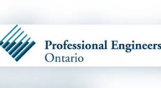

NSERC Canada Graduate Scholarship – Doctoral
Three-year doctoral scholarship at the University of Toronto.
Academic awards received across BUET, the University of British Columbia, and the University of Toronto, together with professional registration in Ontario.
Three-year doctoral scholarship at the University of Toronto.
One-year graduate scholarship at the University of Toronto.
Graduate fellowship received during MASc studies at the University of British Columbia.
Tuition award received during graduate study at the University of British Columbia.
Received for four years during undergraduate study at BUET.
One-year UGC scholarship received during undergraduate study at BUET.
Research travel support awarded by the University of Toronto.
Conference participation support awarded by the University of Toronto.

Licensed through Professional Engineers Ontario since 2021.